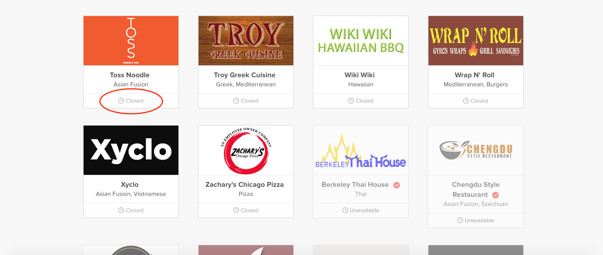
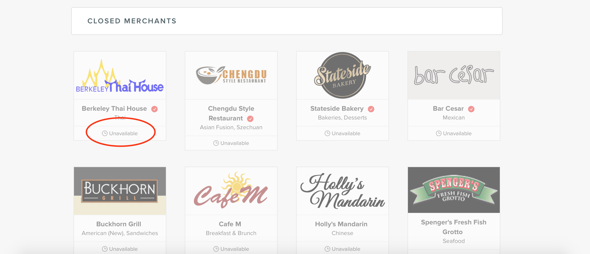

The Problem
Naturally, in order to identify any pain points and discern redesign ideas, I started clicking and working through DoorDash. Starting at the landing page, I found great comfort in its cleanliness and singular, main call-to-action (to input your location). Upon entering my address, DoorDash directed me to their restaurant directory, at which I noticed that, while still simple and clean, there were several pain points that affected ease of finding desired restaurants and related information. More specifically:
- There was no existing filter system, which resulted in the following: (1) an information overload, (2) lack of scalability, and (3) decreased page loading speed for large edge cases. There are 139 stores near the address I had input. And while DoorDash had sections ('DoorDash Select', 'All Merchants', 'Closed Merchants'), there was an initial, overwhelming amount of information - not to mention, a good amount of scrolling to access any following section. Additionally, this appeared to be an inefficient setup for scalability. Of course, there are and will always be many restaurants, but there was no way to condense the lists and allow for ease in finding specific merchants. Finally, upon rerouting to San Francisco (which has over 500 merchant listings), the page loading speed for all the restaurant listings decreased severely, which is a huge user disruption.
- The search bar is poorly placed and fails to utilize powerful search options accompanied with filters. DoorDash does have a rather useful mechanism to find specific restaurants based on name, keywords, and even combinations of characters - it appears that if a specific search query has a single combination of letters found within a merchant title or description, it'll appear. However, I feel there is a disjointed user flow by placing this function away from the sections, and further, without filters. By placing the search bar closer to the restaurants and pairing it with a filter system, users could better narrow their search through a flow that makes sense.
- The closed and unavailable merchants feature is confusing and affects users' understanding of merchant states. DoorDash has a means of showing when companies are closed or unavailable. It appears that a merchant is unavailable when it is still in operating hours but is merely inaccessible through DoorDash. On the other hand, a merchant is closed when the time is after its operating hours. However, there is still much confusion, as unavailable merchants are still set within the 'Closed Merchants' section. Altogether, users are not understanding these indications immediately, which can cause confusion and frustration.
 
The Process
Having identified the UX issues above, I started brainstorming how I could address them in the context of the platform. To note, I realized while sketching and listing ideas that I was changing very little, but I understood that these changes could heavily impact how users felt about and utilized DoorDash.
I made the following (main) specifications with the sketch shown above:
With this iteration, I followed suit with the existing style guide and focused my attention on flow. For example, I created a section called 'Select Your Address' so as to better highlight the practice of 'editing' one's location as needed. In addition, it made sense to have that section set right before the restaurant selection.
With the restaurants, I decided to keep the simple description underneath and, then, incorporate a filter and search feature. It felt natural to narrow the scope based on DoorDash's existing sections and then allow users to peruse through those specified lists. To note, I originally had the filters set up as a drop down list and defaulted at 'All Merchants'. However, I realized that there was space to individualize the drop down into separate, clickable buttons, allowing users to see all options at once. I also noticed DoorDash had their selections shown first and, thus, I changed that in the design to emphasize said feature.
Finally, I included a loading image at the bottom of the restaurant list to signify an infite loading feature - think Pinterest scrolling. This would allow users to continuously peruse through restaurants at their own speed but also ensure that they would not be bombarded with options.
As an adjunct to the visuals, I created this simple click-through prototype on InVision, which you can find here, to simply show the full screens on a browser.
I made the following (main) specifications with the sketch shown above:
- I wanted to ensure that users had a stronger flow of finding their desired merchant. I added the three filter options and paired the search option to the right.
- I included an infinite scroll concept below the restaurants, so that users wouldn't have to click through multiple views but would still be able to see information condensed a little more and given at their will.
- I emphasized the importance of selecting one's address and sectioned it above the restaurants.
With this iteration, I followed suit with the existing style guide and focused my attention on flow. For example, I created a section called 'Select Your Address' so as to better highlight the practice of 'editing' one's location as needed. In addition, it made sense to have that section set right before the restaurant selection.
With the restaurants, I decided to keep the simple description underneath and, then, incorporate a filter and search feature. It felt natural to narrow the scope based on DoorDash's existing sections and then allow users to peruse through those specified lists. To note, I originally had the filters set up as a drop down list and defaulted at 'All Merchants'. However, I realized that there was space to individualize the drop down into separate, clickable buttons, allowing users to see all options at once. I also noticed DoorDash had their selections shown first and, thus, I changed that in the design to emphasize said feature.
Finally, I included a loading image at the bottom of the restaurant list to signify an infite loading feature - think Pinterest scrolling. This would allow users to continuously peruse through restaurants at their own speed but also ensure that they would not be bombarded with options.
As an adjunct to the visuals, I created this simple click-through prototype on InVision, which you can find here, to simply show the full screens on a browser.
Merchant/DoorDash States
As I mentioned above, I had to make considerations to clarify DoorDash's merchant states. Specifically, I had noticed that there was a level of confusion with their usage of 'Unavailable' and 'Closed', and was unable to confidently confirm the differences between the two. Accordingly, I had consolidated those ideas and decided that 'Unavailable' would only show up with merchants within the 'DoorDash Select' and 'All Merchant' sections to represent inaccesibility through DoorDash during operating hours. As for 'Closed', I decided this would be an indication when merchants were past their own restaurant hours and would be shown in the 'Closed Merchants' section. Finally, I noted that DoorDash also needed to include when they were past their operating hours (along with the merchants).
Takeaway
Working on this particular challenge was an awesome experience, as I was able to dig deeply into the implications of each element. This project was truly a realization as to why designers frequent the notion that every design decision must have a purpose. Certainly an intuitive idea, but being able to experience that through this project was a good lesson for myself.